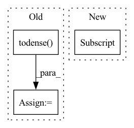

Pattern ID :41987
Before Change
def forward(self, user, item):
user = torch.from_numpy(self.interaction_matrix[user.cpu()].todense()).to(self.device)
item = torch.from_numpy(self.interaction_matrix[:, item.cpu()].todense() ).to(self.device).t()
user = self.user_linear(user)
item = self.item_linear(item)
user = self.user_fc_layers(user)
item = self.item_fc_layers(item)
vector = torch.cosine_similarity(user, item).view(-1)
vector = torch.max(vector, torch.tensor([self.min_y_hat]).to(self.device))
return vector
After Change
// Following lines construct tensor of shape [B,n_users] using the tensor of shape [B,H]
col_indices = self.history_user_id[item].flatten()
row_indices = torch.arange(item.shape[0]).to(self.device).repeat_interleave(self.history_user_id.shape[1] , dim=0)
matrix_01 = torch.zeros(1).to(self.device).repeat(item.shape[0], self.n_users)
matrix_01.index_put_((row_indices, col_indices), self.history_user_value[item].flatten())
item = self.item_linear(matrix_01)In pattern: SUPERPATTERN
Frequency: 4
Non-data size: 3
Instances Fragment ID: 117680995
Project Name: rucaibox/recbole
Commit Name: a63051c31f6cacc489710809995b2610a52b96d6
Time: 2020-09-17
Author: 893833413@qq.com
File Name: recbox/model/general_recommender/dmf.py
M Class Name: DMF
N Class Name: DMF
M Method Name: forward(3)
N Method Name: forward(3)
M Parent Class: GeneralRecommender
N Parent Class: GeneralRecommender
M File Name: recbox/model/general_recommender/dmf.py
N File Name: recbox/model/general_recommender/dmf.py
M Start Line: 73
M End Line: 82
N Start Line: 90
N End Line: 106
Before Change
return self.forward(user, item)
def get_user_embedding(self, user):
user = torch.from_numpy(self.interaction_matrix[user.cpu()].todense() ).to(self.device)
user = self.user_linear(user)
user = self.user_fc_layers(user)
return user
def get_item_embedding(self):After Change
row_indices = torch.arange(user.shape[0]).to(self.device).repeat_interleave(self.history_item_id.shape[1],
dim=0)
matrix_01 = torch.zeros(1).to(self.device).repeat(user.shape[0], self.n_items)
matrix_01.index_put_((row_indices, col_indices), self.history_item_value[user] .flatten())
user = self.user_linear(matrix_01)
return user Fragment ID: 117680992
Project Name: rucaibox/recbole
Commit Name: a63051c31f6cacc489710809995b2610a52b96d6
Time: 2020-09-17
Author: 893833413@qq.com
File Name: recbox/model/general_recommender/dmf.py
M Class Name: DMF
N Class Name: DMF
M Method Name: get_user_embedding(2)
N Method Name: get_user_embedding(2)
M Parent Class: GeneralRecommender
N Parent Class: GeneralRecommender
M File Name: recbox/model/general_recommender/dmf.py
N File Name: recbox/model/general_recommender/dmf.py
M Start Line: 107
M End Line: 109
N Start Line: 141
N End Line: 146
Before Change
def predict(self, ids_te_users, test_tr, remove_train=True):
pred = self.model[ids_te_users,:]
if remove_train:
test_tr = test_tr.todense()
pred -= test_tr * 10**7 //huge number
return pred,
After Change
def predict(self, ids_te_users, test_tr, remove_train=True):
pred = self.model[ids_te_users,:]
if remove_train:
pred[test_tr.nonzero()] = -np.inf
return pred,
def save_model(self, filepath): Fragment ID: 117680986
Project Name: makgyver/rectorch
Commit Name: ea30d0fc68d7f77b60c17c2d8da46c7eae9013f5
Time: 2020-04-14
Author: mak1788@gmail.com
File Name: models.py
M Class Name: EASE
N Class Name: EASE
M Method Name: predict(4)
N Method Name: predict(4)
M Parent Class: RecSysModel
N Parent Class: RecSysModel
M File Name: models.py
N File Name: models.py
M Start Line: 315
M End Line: 318
N Start Line: 315
N End Line: 317
Before Change
//print(len(neg_edges))
rs = np.random.RandomState(seed)
A_u = nx.adjacency_matrix(G).todense()
indexes = np.where(A_u < 1)
indexes = np.c_[indexes[0],indexes[1]]
neg_index = rs.choice(np.arange(len(indexes)), size=int(np.sum(A_u)))
neg_edges = indexes[neg_index].tolist()
len_val = int(prob_val*len(row))
len_test = int(prob_test*len(row))After Change
oberved_edges[i,1] = int(e[0])
oberved_weight[i] = A[e[1], e[0]]
oberved_edges = oberved_edges[np.sum(oberved_edges, axis=-1) >= 0]
oberved_weight = oberved_weight[oberved_weight >= 0]
datasets[ind] = {}
datasets[ind]["graph"] = torch.from_numpy(oberved_edges.T).long().to(device) Fragment ID: 117680984
Project Name: sherylhyx/pytorch_geometric_signed_directed
Commit Name: eeeffe159fa0bd2b54e276e7605f8aaa238d8202
Time: 2022-02-18
Author: xzhang15@wpi.edu
File Name: torch_geometric_signed_directed/utils/directed/directed_link_split.py
M Class Name: AnonimousClass
N Class Name: AnonimousClass
M Method Name: directed_link_class_split(8)
N Method Name: directed_link_class_split(8)
M Parent Class:
N Parent Class:
M File Name: torch_geometric_signed_directed/utils/directed/directed_link_split.py
N File Name: torch_geometric_signed_directed/utils/directed/directed_link_split.py
M Start Line: 104
M End Line: 168
N Start Line: 100
N End Line: 162